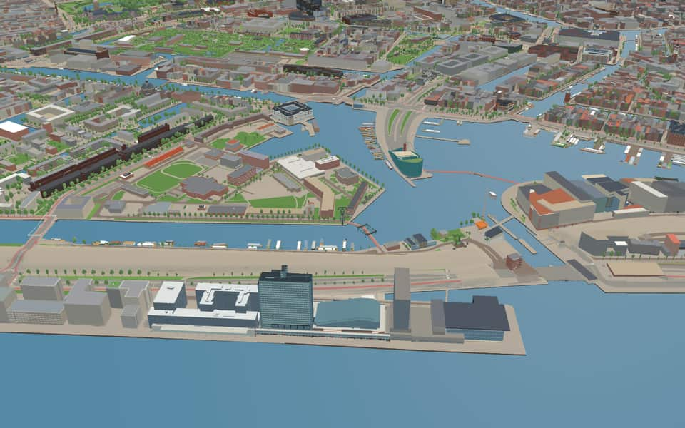
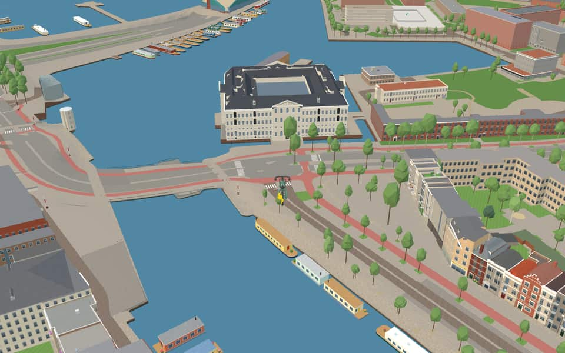
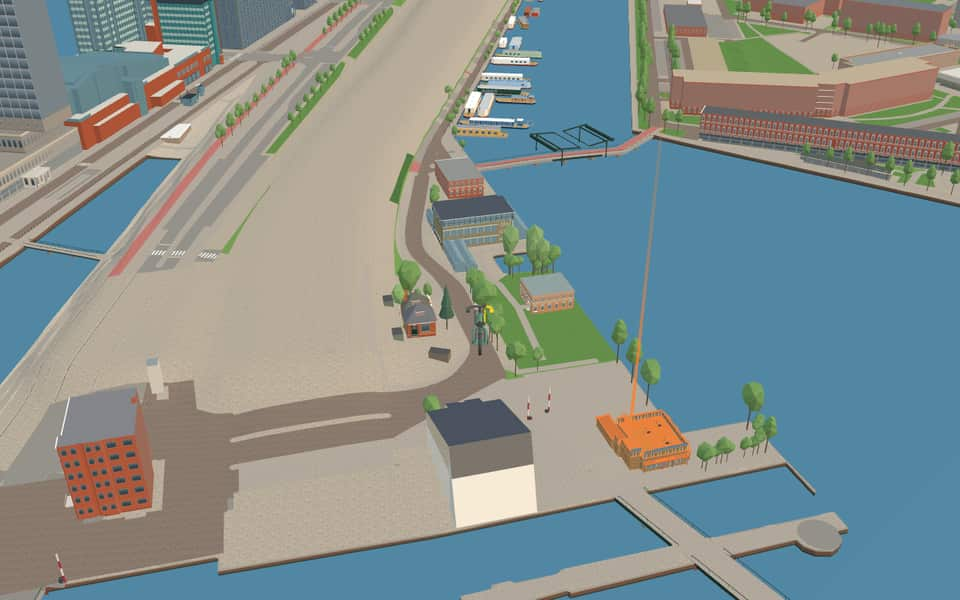
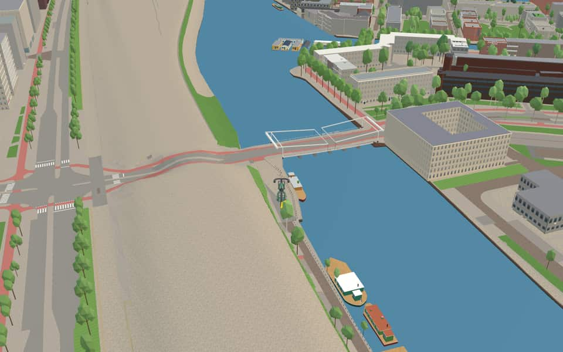

Neighbourhood in Oostelijke Eilanden
Marineterrein
The Marineterrein, formerly the Marine Etablissement Amsterdam, is a former naval site on Kattenburg on the east side of the city centre, between the Oosterdok, the Kattenburgerstraat and the Dijksgracht. nl.wikipedia.org
Ride Marineterrein5 modelled buildings · 40 facts · 14 name stories


In the game
Frames from a ride through Marineterrein.




6 more photos of Marineterrein

_-_panoramio.jpg){kind=link}


.jpg){kind=link}

.jpg){kind=link}


.jpg){kind=link}
Built here
Buildings modelled one by one for the ride.
Het Scheepvaartmuseum (’s Lands Zeemagazijn)
Mediamatic Biotoop Dijkspark
- No picture yet
Hannekes Boom
- No picture yet
Klimmuur Centraal
- No picture yet
Scheepvaartmuseum
Did you know
Trivia the ride can show you here.
- Vincent van Gogh lived here for a year (1877–78) with his uncle in the commander's house. Wikipedia (translated from Dutch)
- The National Maritime Museum fills 's Lands Zeemagazijn, a naval storehouse designed by Daniël Stalpaert and built in 1656. Wikipedia
- The replica East Indiaman Amsterdam was built of iroko wood by 400 volunteers between 1982 and 1990. Wikipedia (translated from Dutch)
- From its north-west corner the Commandantsbrug carries walkers and cyclists over the Dijksgracht. Wikipedia (translated from Dutch)
- The ship sailed from IJmuiden to Amsterdam on August 9, 1990, for the Sail event. Wikipedia (translated from Dutch)
- The National Maritime MuseumAfter a major renovation, the museum reopened on October 2, 2011. en.wikipedia.org
- CommandantsbrugA revolving mechanism was chosen to avoid the visual obstruction caused by lift or bascule bridges. nl.wikipedia.org
- CommandantsbrugThe name Commandantsbrug references a naval base commander. nl.wikipedia.org
- CommandantsbrugAmsterdam officials refused to officially record the name in their address register due to the bridge's temporary status. nl.wikipedia.org
- MariniersbrugUnlike typical Amsterdam bridges, its beams are mounted at the top and rise slightly toward the pivot side. nl.wikipedia.org
- MariniersbrugDangerous steel beams from the ship were later reused at a nearby railway embankment. nl.wikipedia.org
- DijksgrachtThe protective dike was built in the late 19th century to stop silting on the Eastern Islands. en.wikipedia.org
- DijksgrachtSinger Ramses Shaffy lived on a houseboat here during the 1970s. en.wikipedia.org
- DijksgrachtA railway line runs directly atop the dike structure itself. en.wikipedia.org
26 more facts
- DijksgrachtThe name Dijksgracht translates to Dike Canal. en.wikipedia.org
- IJThe largest part of the IJ was reclaimed between 1865 and 1876 to create new polders. en.wikipedia.org
- IJThe Buiten-IJ hosted mixed dinghy sailing events during the 1928 Summer Olympics in Amsterdam. en.wikipedia.org
- IJOranjesluizen locks divide the waterway into an inner section and an outer extension. en.wikipedia.org
- IJThe western part connects directly to the North Sea Canal while the eastern side extends the IJmeer. en.wikipedia.org
- MarinehavenStrict guards protect the site due to stored ammunition and potential attack threats. nl.wikipedia.org
- MarinehavenFacilities often include administrative buildings, helicopter platforms, or an associated airport. nl.wikipedia.org
- Nieuwe VaartResidents could isolate the island by lifting the Kattenburger bridge during the 1787 Bijltjesoproer riot. en.wikipedia.org
- Nieuwe VaartIn 1917, stone-throwing women followed a potato barge through the canal before police fired into the air. en.wikipedia.org
- Nieuwe VaartThe canal was dug in 1649 to fix silting problems caused by the island crossing much of the IJ. en.wikipedia.org
- Nieuwe VaartA houseboat association formed in 2011 after city plans threatened to remove most berths from the western section. en.wikipedia.org
- OosterdokPrince Willem laid the first stone for the lock on June 11, 1830. en.wikipedia.org
- OosterdokThe double lock featured a small chamber finished before the large ocean-going one opened in 1832. en.wikipedia.org
- OosterdokThe western dyke end called Oosterdam was removed in the late 2010s to improve views. en.wikipedia.org
- OosterdokConstruction of this deep port occurred between 1831 and 1832. en.wikipedia.org
- SchippersgrachtDrinking water installation began here in April 1854. en.wikipedia.org
- SchippersgrachtTram line 2 ended at this canal around 1906 before being cut short. en.wikipedia.org
- SchippersgrachtArchitect Herman Hendrik Baanders designed number 5 in 1897. en.wikipedia.org
- SchippersgrachtMonumental buildings from the seventeenth century stand at numbers 14 and 15. en.wikipedia.org
- KattenburgerpleinMost original buildings vanished during a major redevelopment between 1963 and 1976. nl.wikipedia.org
- KattenburgerpleinThe northern facade looks old but was actually constructed in 1970 to mimic historical styles. nl.wikipedia.org
- KattenburgerpleinA distinctive tower crowns an 1898 municipal monument designed by Willem Kromhout. nl.wikipedia.org
- KattenburgerstraatTram service ended here in 1932 after the neighborhood suffered from the economic recession. nl.wikipedia.org
- KattenburgerstraatA reconstructed facade wall on the square mimics old buildings that once stood on Kattenburg island. nl.wikipedia.org
- Prins HendrikkadeHouse numbers skip wildly, restarting at 27 and again at 38 after major omissions. nl.wikipedia.org
- Prins HendrikkadeThe 17th-century Zeemagazijn building has housed the National Maritime Museum since 1973. nl.wikipedia.org
Names on the map
Where the canal, bridge and street names come from.
Canals and water
- DijksgrachtThe street was laid out as a dike at the end of the sixteenth century, after which the surroundings (long a marsh) were filled in with earth (aangeplempt).
- Nieuwe VaartNamed after the Nieuwe Vaart, dug around 1650 to link the IJ and the Oosterdok by the shortest possible route with the mouth of the IJ at Zeeburg.
- OosterdokThe Oosterdok was created by a closing dike on the east side of the city, completed in 1832. The quay on and along this dike was named Oosterdokskade and Oostelijke Handelskade.
- OosterdoksdoorgangThe water passage by the Oosterdokskade, which gives it its name.
- SchippersgrachtIn this neighbourhood, on the harbour side, skippers (schippers) and seamen made up most of the population, which gave the canal and the street their names.
2 other canals without a recorded story
IJ · Marinehaven
Bridges
- CommandantsbrugBridge 2361: a movable bridge.
- MariniersbrugAfter the nearby Marines barracks.Bridge 272: a movable wooden bridge.
- OosterdoksdraaibrugThis swing bridge is by the Oosterdok, hence the name.Bridge 2270: a movable steel bridge.
Streets
- DijksgrachtNamed after the water of the same name, which runs along the inside of the railway embankment here. The embankment originally closed off the Oosterdok from the IJ, which was then still open.
- KattenburgerkruisstraatOne of the three eastern islands, with Wittenburg and Oostenburg. It was already called Kattenburg before it was diked and built on in the second half of the seventeenth century. No explanation for the name has been found so far. There was a house called 'de Cat', but that name is only recorded in the eighteenth century. After many buildings had been demolished during the occupation, the rest were demolished in 1965-1968. Rebuilding then began on a new street plan. The Kattenburgerplein is the only thing that still recalls the old buildings.
- KattenburgerpleinOne of the three eastern islands, with Wittenburg and Oostenburg. It was already called Kattenburg before it was diked and built on in the second half of the seventeenth century. No explanation for the name has been found so far. There was a house called 'de Cat', but that name is only recorded in the eighteenth century. After many buildings had been demolished during the occupation, the rest were demolished in 1965-1968. Rebuilding then began on a new street plan. The Kattenburgerplein is the only thing that still recalls the old buildings.
- KattenburgerstraatOne of the three eastern islands, with Wittenburg and Oostenburg. It was already called Kattenburg before it was diked and built on in the second half of the seventeenth century. No explanation for the name has been found so far. There was a house called 'de Cat', but that name is only recorded in the eighteenth century. After many buildings had been demolished during the occupation, the rest were demolished in 1965-1968. Rebuilding then began on a new street plan. The Kattenburgerplein is the only thing that still recalls the old buildings.
- OosterdoksdraaibrugThis swing bridge is by the Oosterdok, hence the name.
- Piet HeinkadePieter Pieterszoon Heyn (1577-1629), vice-admiral in the service of the West India Company, known for capturing the Spanish silver fleet in 1628 in the bay of Matanzas (Cuba).
- Prins HendrikkadeThe youngest son of King William II, Prince Willem Frederik Hendrik (1820-1879), who took a keen interest in trade and shipping. His bust, made in 1885 by Professor F. Stracke, stands opposite the Scheepvaarthuis. With the naming in 1879 a number of vivid names disappeared, and with them a piece of the city's memory.
3 other streets without a recorded story
Commandantsbrug · Dijksgrachtkade · Kade West